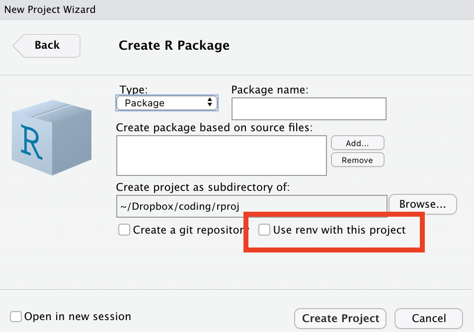

devtools::loaded_packages()[1:5, ] package
1 ggplot2
2 blogdown
3 ggthemes
4 devtools
5 usethis
path
1 /Library/Frameworks/R.framework/Versions/4.1/Resources/library/ggplot2
2 /Library/Frameworks/R.framework/Versions/4.1/Resources/library/blogdown
3 /Library/Frameworks/R.framework/Versions/4.1/Resources/library/ggthemes
4 /Library/Frameworks/R.framework/Versions/4.1/Resources/library/devtools
5 /Library/Frameworks/R.framework/Versions/4.1/Resources/library/usethisinstall.packages(pkgs = "dplyr").devtools::install_github("tidyverse/dplyr")library("dplyr").devtools::loaded_packages()search().detach(package:dplyr)search()remove.packages("dplyr").installed.packages()pak PackageAs of September 2022, Posit will probably recommend pak as its package installation tool, especially, for installing packages directly from GitHub.
pak::pkg_install("tibble")pak::pkg_install("tidyverse/tibble")pak::pkg_deps_tree("tibble")pak::pkg_deps_explain("tibble", "rlang")pak::local_install("cli")When you create a package, you are working on its source code. An R package can be in one of five states:
source. Source is the thing that is on GitHub or the raw code that a developer is creating.
bundled. A package compressed into a single file. In R, a bundled package uses the extension .tar.gz.
binary. Like a package bundle, a binary is a single file. Binaries are either Mac (extension .tgs) or Windows (extension zip). CRAN makes binaries. A developer submits a bundle and CRAN convert it to a binary.
installed. An installed package is a binary package that was decompressed into a package library.
in-memory. The familiar library(package) command puts the package in memory and on the search path.
renv packageThe renv package is the successor to packrat and is available in Rstudio version RStudio 2022.07.2. When choosing to create a package, a checkbox will appear that allows for renv to be installed.

More information is available on the website. I’m used to just calling library(package) or package::function(). When using renv you have to install it first even though it’s already in your local library.
renv::init() to begin.renv::snapshot(). It saves a file renv.lock in the root directory that contains an inventory of the packages used.The lockfile contents look like the code below:
{
"R": {
"Version": "4.1.3",
"Repositories": [
{
"Name": "CRAN",
"URL": "https://cran.rstudio.com"
}
]
},
"Packages": {
"R6": {
"Package": "R6",
"Version": "2.5.1",
"Source": "Repository",
"Repository": "CRAN",
"Hash": "470851b6d5d0ac559e9d01bb352b4021",
"Requirements": []
},
}
}devtools functionsThese are the tools from the devtools package that I use the most. Alot of them are available via the RStudio GUI.
devtools::build() - Build packagedevtools::build_rmd() - Build a Rmarkdown files packagedevtools::build_site() - Execute ‘pkgdown’ build_site in a packagedevtools::build_vignettes() - Build package vignettes.devtools::check() - Check a packagedevtools::document() - Document a packagedevtools::load_all() - Load packagesdevtools::spell_check() - One I should run more!In building a package, I often include an rmarkdown document. The recommendation is for the document to be included in the inst folder. For example, the document would be included in the inst\article\index.Rmd. When the package is installed, the inst portion is omitted, leaving article\index.Rmd. Writing a function within the development version requires that it be referred to as a system file. The concept is detailed in the stackoverflow post: How to include RMarkdown file in r package?.
system.file("article", "index.Rmd", package = "myPackage")In R, library means a collection of packages and packages means software tools. This convention is counter to other programming languages.
When a developer creates his or her own package, it will in turn rely on other packages. Those packages will often times be outside of the base R package. (Although, I’ve seen some amazing coding where the author limits use to just functions in the base package.) Where a package incorporates the use of another package, it is referred to as a dependency. These dependencies must be explicit and inventoried. They must even include the specific versions. renv can help with that process. Also, remember that as a developer, you are writing source code and it may behave differently when it is bundled and installed in a user’s local library. Happy coding!
The views, analysis and conclusions presented within this paper represent the author’s alone and not of any other person, organization or government entity. While I have made every reasonable effort to ensure that the information in this article was correct, it will nonetheless contain errors, inaccuracies and inconsistencies. It is a working paper subject to revision without notice as additional information becomes available. Any liability is disclaimed as to any party for any loss, damage, or disruption caused by errors or omissions, whether such errors or omissions result from negligence, accident, or any other cause. The author(s) received no financial support for the research, authorship, and/or publication of this article.
─ Session info ───────────────────────────────────────────────────────────────────────────────────────────────────────
setting value
version R version 4.1.3 (2022-03-10)
os macOS Big Sur/Monterey 10.16
system x86_64, darwin17.0
ui X11
language (EN)
collate en_US.UTF-8
ctype en_US.UTF-8
tz America/New_York
date 2022-12-08
pandoc 2.19.2 @ /Applications/RStudio.app/Contents/MacOS/quarto/bin/tools/ (via rmarkdown)
─ Packages ───────────────────────────────────────────────────────────────────────────────────────────────────────────
package * version date (UTC) lib source
assertthat 0.2.1 2019-03-21 [1] CRAN (R 4.1.0)
blogdown * 1.13 2022-09-24 [1] CRAN (R 4.1.2)
bookdown 0.29 2022-09-12 [1] CRAN (R 4.1.3)
bslib 0.4.1.9900 2022-12-08 [1] Github (rstudio/bslib@1a07d5e)
cachem 1.0.6 2021-08-19 [1] CRAN (R 4.1.0)
callr 3.7.2 2022-08-22 [1] CRAN (R 4.1.2)
cli 3.4.1 2022-09-23 [1] CRAN (R 4.1.2)
codetools 0.2-18 2020-11-04 [1] CRAN (R 4.1.3)
colorspace 2.0-3 2022-02-21 [1] CRAN (R 4.1.2)
crayon 1.5.2 2022-09-29 [1] CRAN (R 4.1.3)
DBI 1.1.3 2022-06-18 [1] CRAN (R 4.1.2)
devtools * 2.4.4 2022-07-20 [1] CRAN (R 4.1.2)
digest 0.6.30 2022-10-18 [1] CRAN (R 4.1.2)
dplyr 1.0.10 2022-09-01 [1] CRAN (R 4.1.2)
ellipsis 0.3.2 2021-04-29 [1] CRAN (R 4.1.0)
evaluate 0.18 2022-11-07 [1] CRAN (R 4.1.2)
fansi 1.0.3 2022-03-24 [1] CRAN (R 4.1.2)
fastmap 1.1.0 2021-01-25 [1] CRAN (R 4.1.0)
formatR 1.12 2022-03-31 [1] CRAN (R 4.1.2)
fs 1.5.2 2021-12-08 [1] CRAN (R 4.1.0)
generics 0.1.3 2022-07-05 [1] CRAN (R 4.1.2)
ggplot2 * 3.4.0 2022-11-04 [1] CRAN (R 4.1.2)
ggthemes * 4.2.4 2021-01-20 [1] CRAN (R 4.1.0)
glue 1.6.2 2022-02-24 [1] CRAN (R 4.1.2)
gtable 0.3.1 2022-09-01 [1] CRAN (R 4.1.2)
htmltools 0.5.4.9000 2022-12-08 [1] Github (rstudio/htmltools@f53be17)
htmlwidgets 1.5.4 2021-09-08 [1] CRAN (R 4.1.0)
httpuv 1.6.6 2022-09-08 [1] CRAN (R 4.1.2)
jquerylib 0.1.4 2021-04-26 [1] CRAN (R 4.1.0)
jsonlite 1.8.4 2022-12-06 [1] CRAN (R 4.1.3)
knitr 1.41 2022-11-18 [1] CRAN (R 4.1.2)
later 1.3.0 2021-08-18 [1] CRAN (R 4.1.0)
lifecycle 1.0.3 2022-10-07 [1] CRAN (R 4.1.2)
magrittr 2.0.3 2022-03-30 [1] CRAN (R 4.1.2)
memoise 2.0.1 2021-11-26 [1] CRAN (R 4.1.0)
mime 0.12 2021-09-28 [1] CRAN (R 4.1.0)
miniUI 0.1.1.1 2018-05-18 [1] CRAN (R 4.1.0)
munsell 0.5.0 2018-06-12 [1] CRAN (R 4.1.0)
pillar 1.8.1 2022-08-19 [1] CRAN (R 4.1.2)
pkgbuild 1.3.1 2021-12-20 [1] CRAN (R 4.1.0)
pkgconfig 2.0.3 2019-09-22 [1] CRAN (R 4.1.0)
pkgload 1.3.0 2022-06-27 [1] CRAN (R 4.1.2)
prettyunits 1.1.1 2020-01-24 [1] CRAN (R 4.1.0)
processx 3.8.0 2022-10-26 [1] CRAN (R 4.1.2)
profvis 0.3.7 2020-11-02 [1] CRAN (R 4.1.0)
promises 1.2.0.1 2021-02-11 [1] CRAN (R 4.1.0)
ps 1.7.2 2022-10-26 [1] CRAN (R 4.1.2)
purrr 0.3.5 2022-10-06 [1] CRAN (R 4.1.2)
R6 2.5.1 2021-08-19 [1] CRAN (R 4.1.0)
Rcpp 1.0.9 2022-07-08 [1] CRAN (R 4.1.2)
remotes 2.4.2 2021-11-30 [1] CRAN (R 4.1.0)
rlang 1.0.6 2022-09-24 [1] CRAN (R 4.1.2)
rmarkdown 2.18 2022-11-09 [1] CRAN (R 4.1.3)
rstudioapi 0.14 2022-08-22 [1] CRAN (R 4.1.2)
sass 0.4.4 2022-11-24 [1] CRAN (R 4.1.2)
scales 1.2.1 2022-08-20 [1] CRAN (R 4.1.2)
sessioninfo 1.2.2 2021-12-06 [1] CRAN (R 4.1.0)
shiny 1.7.2 2022-07-19 [1] CRAN (R 4.1.2)
stringi 1.7.8 2022-07-11 [1] CRAN (R 4.1.2)
stringr 1.5.0 2022-12-02 [1] CRAN (R 4.1.2)
tibble 3.1.8.9002 2022-12-08 [1] Github (tidyverse/tibble@134e7ba)
tidyselect 1.2.0 2022-10-10 [1] CRAN (R 4.1.2)
urlchecker 1.0.1 2021-11-30 [1] CRAN (R 4.1.0)
usethis * 2.1.6 2022-05-25 [1] CRAN (R 4.1.2)
utf8 1.2.2 2021-07-24 [1] CRAN (R 4.1.0)
vctrs 0.5.1.9000 2022-12-08 [1] Github (r-lib/vctrs@48794fd)
withr 2.5.0 2022-03-03 [1] CRAN (R 4.1.0)
xfun 0.35 2022-11-16 [1] CRAN (R 4.1.2)
xtable 1.8-4 2019-04-21 [1] CRAN (R 4.1.0)
yaml 2.3.6 2022-10-18 [1] CRAN (R 4.1.2)
[1] /Library/Frameworks/R.framework/Versions/4.1/Resources/library
──────────────────────────────────────────────────────────────────────────────────────────────────────────────────────